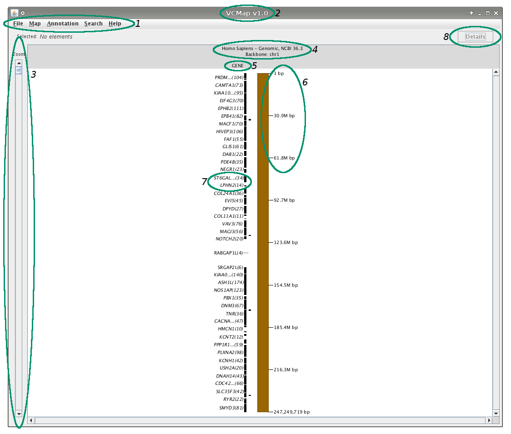

The VCMap Window

- Menu Bar
- The Version of VCMap
- Zoom Bar
- Map Label
- Non backbone maps will only contain the map's name.
- Column Label
- Unit Labels
- Feature Grouping Labels
- Details Button
- asdfasdfasdfasdfasdfasdfasdfasdfasdfasdfasdfasdfasdfasdfasdfasdfasdf.